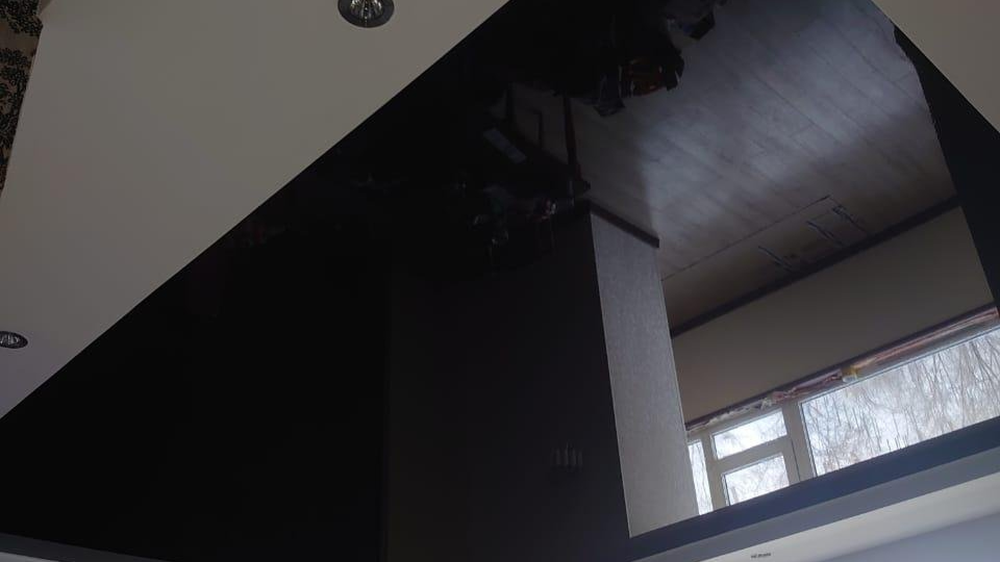
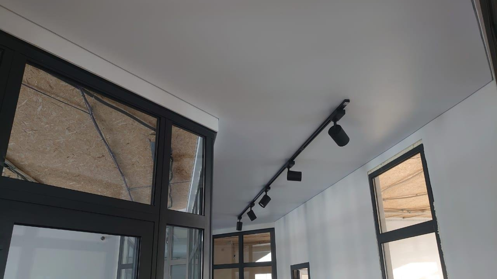
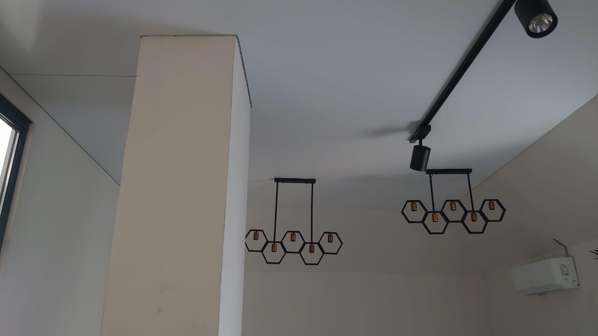
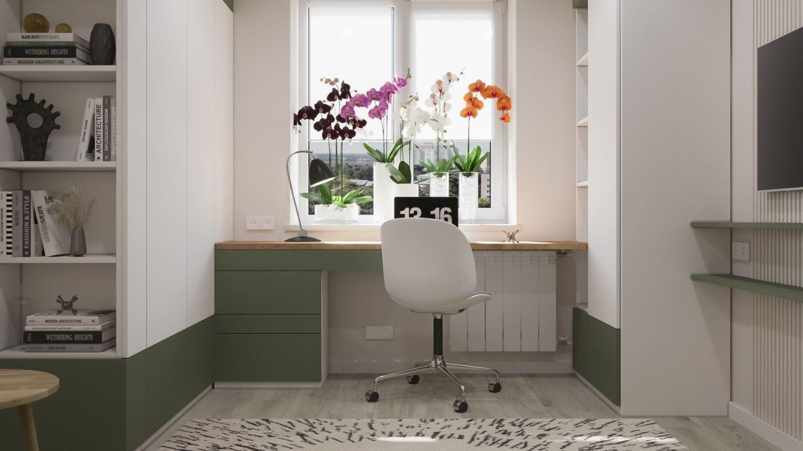

Глянец
Полотно,
которое отражает
Чёрное полотно работает зеркалом: в нём целиком видно окно, откосы и часть соседней комнаты. Чем темнее цвет, тем сильнее глянец — и тем выше кажется комната.
Усть-Каменогорск · фабрика
«АдыЛина» — натяжные потолки от производителя. Плюс тёплые полы, электротехника и электронагревательное оборудование.
Листайте — покажем полотно

Глянец
Чёрное полотно работает зеркалом: в нём целиком видно окно, откосы и часть соседней комнаты. Чем темнее цвет, тем сильнее глянец — и тем выше кажется комната.

Мат
Матовая поверхность не отражает — свет ложится ровно, и потолок читается единой плоскостью без стыков. Здесь по нему пущен трек со светильниками, а полотно заведено вплотную к витражам.
Свет внутри полотна
Световые линии врезаны в полотно и светят сквозь него: под потолком ничего не висит, источник — сама плоскость. По периметру видно короб, в который линия и заведена.
Устройство
Профиль крепится к стене или к перекрытию и задаёт линию будущей плоскости. Всё, что должно оказаться внутри — короба, закладные под светильники — ставится до полотна.
Раскроенное по комнате полотно закрепляют по всему периметру. Держит его собственное натяжение, поэтому под потолком нет ни подвесов, ни стыков.
Точечные светильники, трек или световая линия — источник оказывается на уровне потолка, а не под ним. Это и даёт кадры вроде первого экрана.

Направления
Четыре направления. Потолки — собственное производство, остальное закрывает тот же ремонт.
Основное направление. Полотно от производителя: «АдыЛина» — фабрика, а не монтажная бригада.
Подогрев пола — второе направление фабрики. Ставится в тот же ремонт, что и потолок.
Электрика для света в потолке: то, чем питаются линии, треки и точечные светильники.
Обогрев — отдельная линейка оборудования рядом с тёплыми полами.

Цвет полотна, рисунок световых линий и положение светильников проще выбрать на визуализации, чем на образце в руках: на потолке всё это выглядит иначе. Визуализации мы всегда подписываем — чтобы их не путали с фотографиями готовых объектов.
Свет выключен · режим схемы
Приглашаем к сотрудничеству дилеров
«АдыЛина» о себе: «Натяжные потолки от производителя. Приглашаем к сотрудничеству дилеров»
Хозяин квартиры ищет красивый потолок, монтажник из области — поставщика полотна и багета. Это два разных разговора. Ниже — второй: без света и картинок, сразу по делу.
Полотно и профиль от производителя: ширины, фактуры, цвета. Ассортимент — по запросу.
Отгрузка в область, партия, образцы, помощь с монтажом. Условия обсуждаются с фабрикой напрямую.
Написать в WhatsApp и отметить, что вопрос по дилерству, — так разговор сразу идёт про опт, а не про квартиру.
Как найти